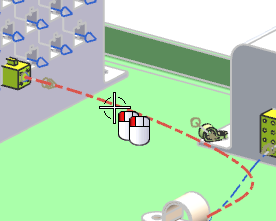
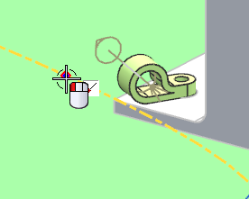
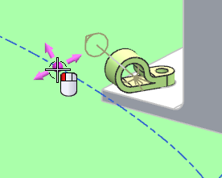
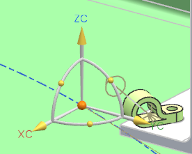
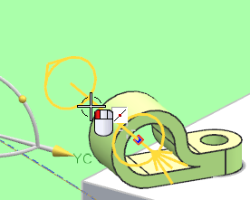
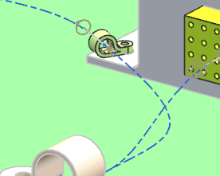

Re-route an existing path segment through the clamp
-
Double-click the segment between the clamp and the connector on the controller.

The Spline Path dialog box opens.
-
On the Selection bar, turn off all Snap Point options except for .
-
Select an arbitrary point on the segment near the clamp through which you want to route the wire.

-
Select the bubble that identifies the new point you just inserted on the segment.

The Dynamic Coordinate System appears at the point.

-
On the Selection bar, turn off all Snap Point options except for .
-
Select the clamp's port.

The segment is rerouted through the port.

-
点击确定。

The clamp that you just added was placed in the harness subassembly. Because it is in the subassembly with the routing, it may be displayed in the formboard. However, in order for that to happen, there must be an RCP at the fixture port.